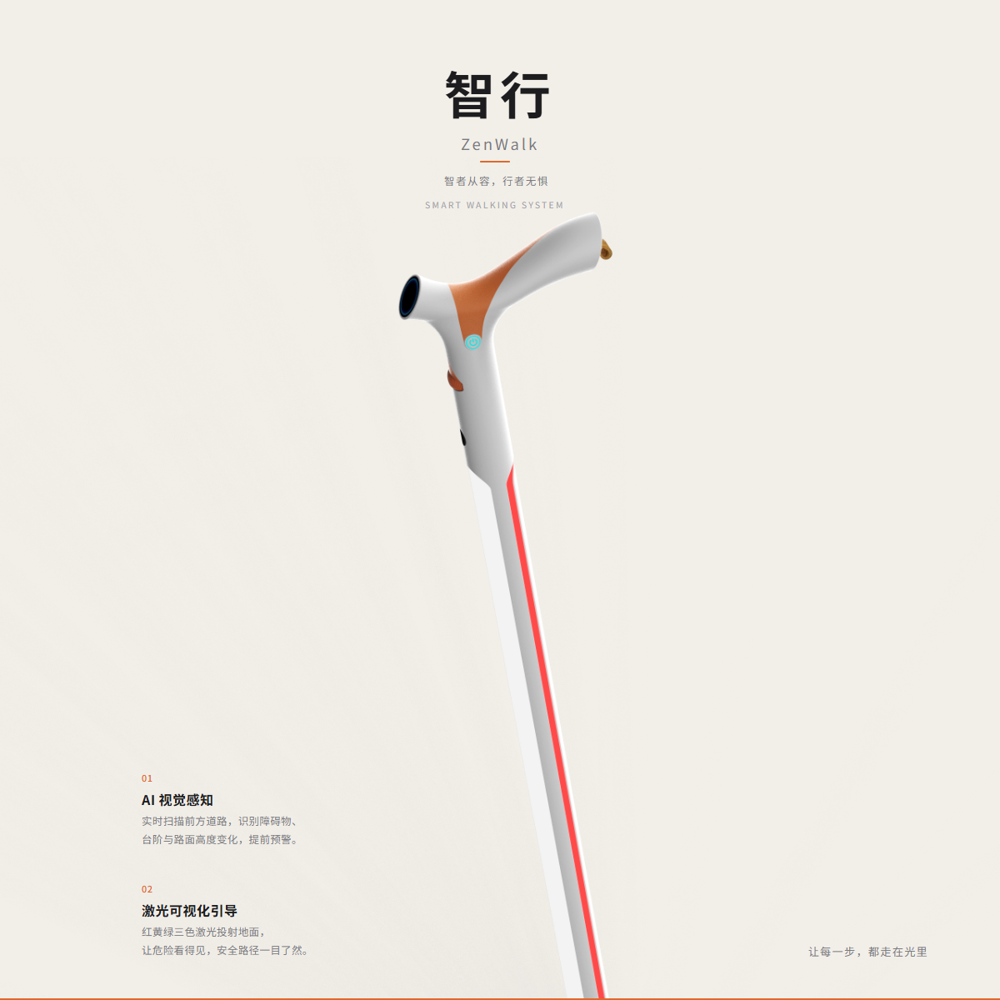
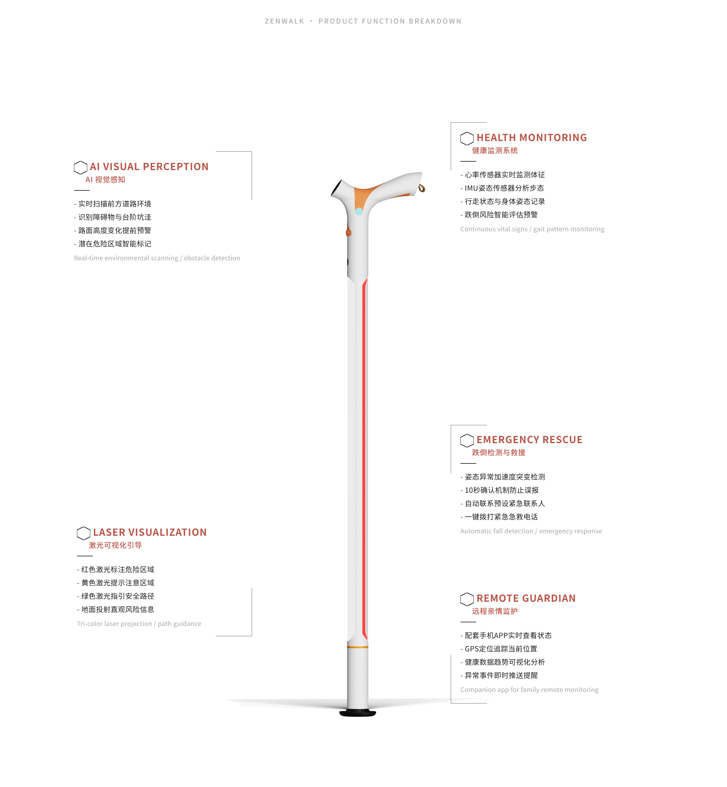
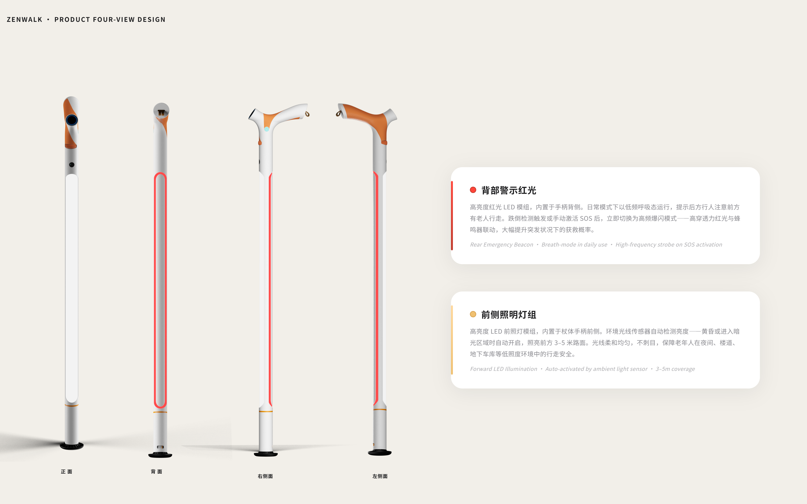
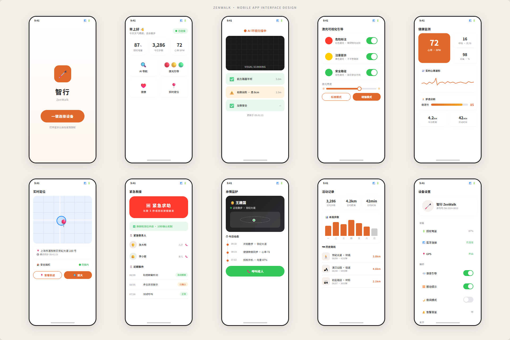
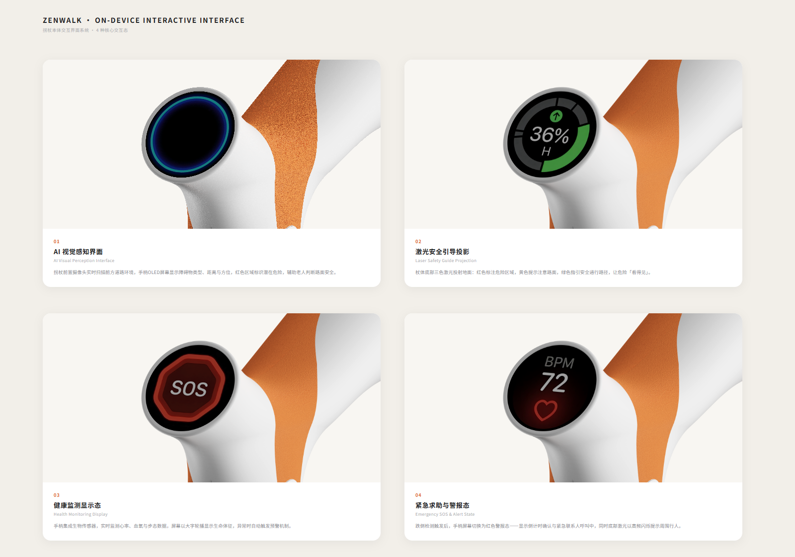
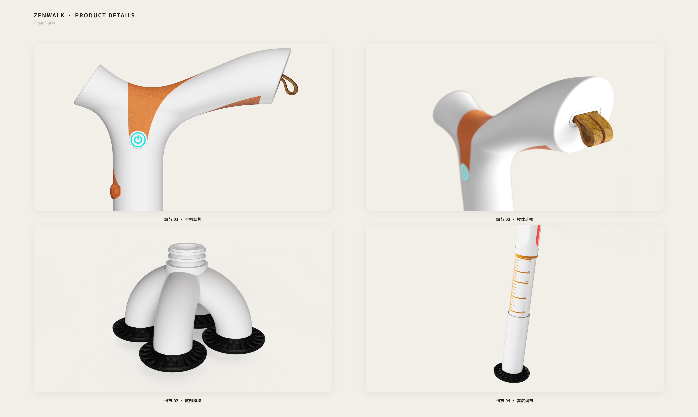

智行 ZenWalk · 智能感知助行与远程监护系统
智行是一款面向老年人及行动不便人群的智能助行设备。突破传统拐杖单一支撑功能，将人体工学设计、AI环境感知、激光可视化引导、健康监测与远程亲情监护系统融合，打造集辅助行走、安全预警、健康管理、紧急救援于一体的智慧助行系统。让老人看见危险，让家人安心守护。






🌏 适老化前景 · Aging-Friendly Future
据国家统计局数据，截至2025年末，中国60岁及以上人口已突破3.2亿，占总人口的22.8%，标志着中国正式进入中度老龄化社会。预计到2035年，这一比例将攀升至30%以上，银发经济市场规模有望达到30万亿元。然而，当前老年辅助器具市场仍以"被动辅助"为主——传统拐杖、轮椅、助行器仅提供物理支撑，缺乏主动感知、智能预警与情感连接的能力。智行 ZenWalk 正是在这一时代背景下应运而生：将 AI 视觉感知、激光引导、健康监测与远程监护融入一根拐杖之中，让"辅助行走"升级为"智慧守护"，重新定义适老化产品的技术上限与人文温度。
📊 市场行情 · Market Landscape
全球智能助行设备市场正以年均14.2%的复合增长率快速扩张，预计2030年将达到187亿美元规模。驱动因素来自三方面：其一，全球老龄化进程加速，老年人口基数持续扩大；其二，"科技适老"政策密集出台，中国国务院《"十四五"国家老龄事业发展和养老服务体系规划》明确将智慧养老产品列为重点发展方向；其三，老年群体消费观念转型——新一代老年人对科技产品的接受度显著提高，愿意为品质、安全与尊严付费。然而，当前市场产品同质化严重，真正将 AI 感知、主动安全预警与亲情互联深度融合的产品极为稀缺。智行 ZenWalk 精准切入这一蓝海缺口，以"硬件+AI+服务"三位一体模式构建差异化竞争力。
❤️ 人文关怀 · Humanistic Care
适老化设计的核心不是"功能堆砌"，而是"有尊严的守护"。老年用户往往对自身的行动能力衰退感到焦虑甚至羞耻——他们不希望被当作"需要被照顾的弱者"。因此，智行 ZenWalk 在设计中始终遵循三条人文原则：
① 隐形守护 —— 所有智能功能在后台静默运行，拐杖外观优雅如一件日常配饰，而非"医疗设备"。激光引导与AI感知均在无声中完成，不让老人感到被监视。
② 自主优先 —— 系统提供建议而非指令，保留老人的决策权。SOS 触发采用"倒计时确认"机制，避免误触发带来的尴尬，让老人在紧急时刻仍有掌控感。
③ 情感连接 —— "家庭守护"功能让子女能远程查看老人的健康趋势与活动状态，但信息展示以"安心"而非"监控"为基调，用温和的数据可视化替代冷冰冰的警报推送，在安全与隐私之间找到温暖的平衡。
🖐️ 交互与人机工程 · Ergonomics & Interaction
智慧助行设备的人机工程学挑战在于：如何在极其有限的手柄空间中，整合感知、显示、操作与反馈四大交互通道，同时确保老年用户的低认知负荷与高操作容错。
握持工学：手柄采用 11.5° 前倾角 + 微弧曲面设计，基于中国老年人群手部人体测量数据优化，将压力均匀分布于掌弓，显著降低长时间持握的疲劳感。表面微纹理在潮湿环境下仍保持稳定摩擦力。
多模态交互：智行采用"视觉（OLED屏+激光投射）+ 听觉（语音提示+蜂鸣）+ 触觉（手柄振动反馈）"三通道并行策略。关键安全信息通过至少两个通道同时传递，确保在单一感官受限（如听力下降、光线强烈）时信息不丢失。
适老化交互准则：屏幕字体最小16pt，色彩对比度≥4.5:1（WCAG AA级），触控热区≥48×48px，所有操作在三步内完成。SOS 实体按键采用凸起纹理+高对比色设计，无需视觉确认即可通过触觉准确触发——因为在紧急时刻，每一秒都至关重要。